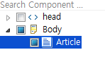
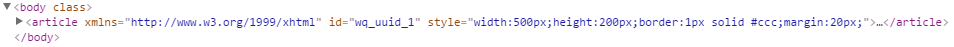

5.Article (HTML5)
<article> 태그는 일반적으로 단독의 내용을 갖고 있는 문장 또는 포럼, 블로그, 뉴스, 코멘트 등의 내용을 포함하고 있습니다.
5.1Property
Property | Description |
|---|---|
id | 컴포넌트의 ID로 전역객체로 할당되며 script에서 본 id로 컴포넌트에 접근이 가능하다. |
5.2브라우저 캡쳐화면

[그림 5-1]01
5.3class 적용과 스타일 변경

[그림 5-2]02
No | Class | Description |
|---|---|---|
1 |
| websquare의 style 편집기에서 해당 style을 직접 수정합니다. |
5.4주의사항 및 Tip
html5에 추가 요소로서 웹스퀘어 에서의 컴포넌트 로서는 따로 속성이 없으며 필요할경우 Attribute Add로 버튼으로 속성을 추가해준다.